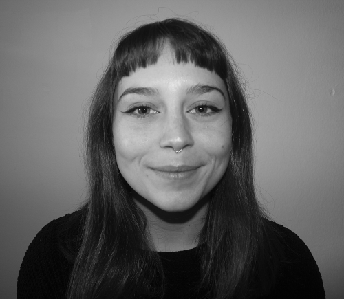

<!DOCTYPE html>
<html lang="en">
    <head>
        <meta charset="UTF-8">
        <title>My Resume</title>
    </head>
</html>
<body>
    <h1>Arianna Armaroli</h1>
    
    <h2>Summary</h2>
     <p>Creative and professional. Specialized in art education and communication. I am proactive, a fast learner when it comes to new work methodologies, and I enjoy challenging myself with new experiences.</p>
    <hr></hr> 
    <h2>Education</h2>
     <ul>
        <li>ACADEMY OF FINE ARTS OF BOLOGNA - Bachelor's Degree in Art Education and Communication (2019/2024) </li>
        <li>F. ARCANGELI ART HIGH SCHOOL, BOLOGNA - High School Diploma in Figurative, Plastic, and Sculptural Arts (2013/2018)</li>
     </ul>
    <hr></hr>       
    <h2>Work Experiences</h2>
     <ul>
        <li>BALÙ NURSERY AND PRESCHOOL - Internship Experience as Educational Staff Assistant (2017)</li>
           <ul>
              <li>Assisted educational staff </li>
              <li>Supervised children during activities, playtime, and rest</li>
              <li>Organized artistic workshops and activities for children</li>
           </ul>
        <li>AL GIROTONDO SOCIAL COOPERATIVE - Internship Experience as Organizer of Art and Educational Workshops (2018)</li>
           <ul>
              <li>Decorated indoor and outdoor spaces (created murals and outdoor sculptures)</li>
              <li>Organized recreational and play-based activities</li>
              <li>Managed art workshops and activities for children</li>
           </ul>
        <li>MAMbo MUSEUM OF MODERN ART OF BOLOGNA - Internship Experience as Museum Education Department (2023)</li>
           <ul>
              <li>Cultural mediation to engage the public</li>
              <li>Organized targeted activities and workshops</li>
              <li>Guided organized groups during museum visits</li>
           </ul> 
     </ul>
    <hr></hr>
    <h2>Skills</h2> 
        <ul>
            <li>Management and planning of art workshops: &star;&star;&star;&star;&star;</li>
            <li>Computer skills (Microsoft Office and Adobe suites): &star;&star;&star;&star;	</li>
            <li>Organizational skills: &star;&star;&star;&star;&star;</li>
            <li>Interpersonal skills: &star;&star;&star;&star;&star;</li>
        </ul>
    <hr></hr>
    <h2>Other</h2>
        <ul>
            <li><a href="public/about.html">About Me</a></li>
            <li><a href="public/contact.html">Contact Me</a></li>
        </ul>
    <hr></hr>
    <footer>
        <p>&copy;	Arianna Armaroli. All right reserved.</p>
    </footer>
</body>